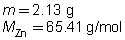
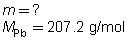

Chemistry 20: Module 6—Stoichiometry
 Self-Check Answers
Self-Check Answers
SC 2.
Zn(s) |
+ |
Pb(NO3)2(aq) |
→ |
Pb(s) |
+ |
Zn(NO3)2(aq) |
 |
|
|
|
 |
|
|
 |
According to the stoichiometric method, 6.75 g of lead is produced by the reaction of 2.13 g of zinc.
SC 3. m = 7.60 g − 0.92 g = 6.68 g
According to the evidence gathered, 6.68 g of lead was produced.
| SC 4. |
The experiment is judged to be effective since the percentage difference is less than 5%.